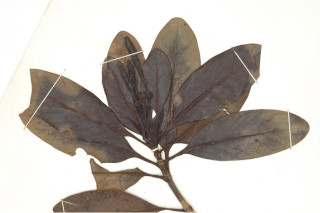
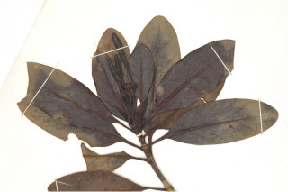

Images :
 

| Habit : | Small trees up to 5 m tall. |
| Leaves : | Leaves simple , opposite , decussate ; stipule large, lanceolate , interpetiolar , caducous and leaving scar ; petiole 1-1.3 cm long, planoconvex in cross section, glabrous ; lamina 6-8.5 x 2.7-3.2, elliptic , elliptic-obovate , apex obtuse , base attenuate , margin entire and revolute , coriaceous , glabrous ; midrib raised above; secondary_nerves ca. 7 pairs; tertiary_nerves obscure . |
| Inflorescence / Flower : | N/A |
| Fruit and Seed : | N/A |